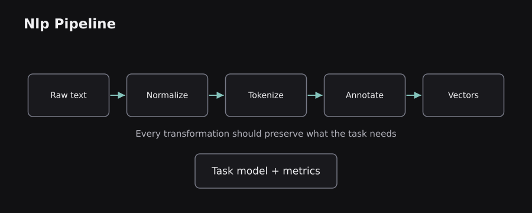
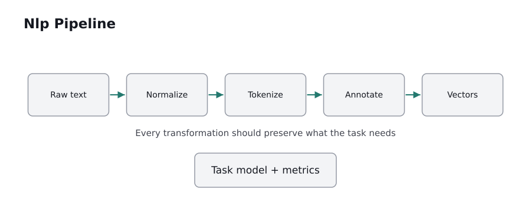

A computer receives text as characters and bytes, not as meaning. This chapter follows a sentence through the classical NLP pipeline: cleaning, splitting, linguistic analysis, representation, and evaluation. These ideas remain relevant even when the final model is a Transformer.
5.0 — What natural language processing actually solves
Natural language processing (NLP) studies methods that allow computers to analyze, transform, retrieve, classify, and generate human language. Language is unusually difficult data: a word can have several meanings, a sentence can mean more than its individual words, and everyday language ignores strict formats. Compare “The bank approved the loan” with “We sat on the river bank.” The same spelling points to two different concepts.
A useful distinction is understanding tasks versus generation tasks. Spam detection, named-entity recognition, sentiment analysis, retrieval, and document classification primarily analyze existing language. Translation, summarization, and conversational responses produce language. Many applications combine both: a customer-support system first retrieves the correct policy, then writes a response grounded in it.
The recurring design question is what information must survive each processing step? If a classifier cares about negation, deleting the word “not” is damaging. If a legal search engine cares about exact citations, replacing all wording with vague semantic vectors can also be damaging. NLP pipelines are therefore task-dependent, not a fixed sequence of mandatory cleaning operations.
Analogy: text processing is like sorting mail. Identifying letters, finding addresses, routing them, and composing replies are related but different jobs. The analogy breaks at ambiguity: the same sentence can express sarcasm, an implied intention, or multiple defensible interpretations. Models make statistical estimates rather than reading minds.
5.1 — Text, Unicode, corpora, documents, and tokens
A corpus is a collection of language data; a document is one unit inside it. A document might be a review, paragraph, entire book, or chat message. A token is a unit chosen for processing. Classical systems often tokenize words and punctuation, while modern language models usually use subwords or bytes. Tokens are not always whole words.
The text you see on screen is represented through Unicode, which gives characters code points, and an encoding such as UTF-8, which stores those code points as bytes. This matters because apparent characters may contain several Unicode code points, and visually similar strings can differ internally. Lowercasing, accent removal, and Unicode normalization can therefore change matching behavior.
For example, “I can't wait!” might be segmented as [I, ca, n't, wait, !] by one tokenizer and differently by another. Neither segmentation is universally correct: downstream algorithms must agree on the exact tokenization. When training and deployment tokenize differently, vocabulary IDs and model inputs stop matching.
Why vocabulary size matters: treating each rare word as a separate symbol creates a huge, sparse vocabulary and an out-of-vocabulary problem for unseen words. Subword tokenizers address this later by building familiar pieces from which unfamiliar words can be represented.
5.2 — Cleaning without deleting meaning
Text often contains HTML markup, tracking links, duplicate whitespace, broken encodings, repeated boilerplate, and OCR mistakes. Text normalization aims to make irrelevant variations consistent. Typical operations include Unicode normalization, whitespace normalization, case folding, or the removal of known markup. Each operation should have a reason connected to the task.
Consider two reviews: “The camera is GOOD” and “The camera is good.” For ordinary sentiment analysis, case folding may be harmless. But uppercase letters can indicate shouting or emphasis, so removing case may reduce a model’s ability to detect tone. Likewise, stripping punctuation would hide useful information in “Great...” versus “Great!”.
Stopwords are common terms such as “the”, “and”, or “is”. Traditional bag-of-words pipelines sometimes remove them to reduce noise. However, “not”, “never”, and “without” can reverse sentiment. Modern contextual models generally learn from these words rather than blindly dropping them. Stemming and lemmatization are separate operations explained next; neither should be confused with removing low-value characters.
Concrete workflow: retain a copy of the original text, record each transformation, apply the same cleaning to production inputs, and examine representative outputs. A cleanup rule that makes a corpus shorter is not automatically a rule that makes its predictions better. Domain-specific content such as identifiers, dates, or legal clauses can make aggressive cleaning especially risky.
5.3 — Tokenization, sentence boundaries, and subwords
Sentence segmentation identifies sentence boundaries; word tokenization identifies linguistic units within sentences; subword tokenization divides words into learned pieces. The sequence is not universal. For instance, abbreviations such as “Dr.” contain a period that should not necessarily end a sentence, and languages such as Chinese do not separate every word with a space.
A word-level tokenizer can produce ['Natural', 'language', 'processing', 'works', '.']. A subword tokenizer might further split an unfamiliar long word into meaningful or statistically frequent fragments. Byte Pair Encoding (BPE) begins with small symbols and repeatedly merges common adjacent pairs. WordPiece, associated with BERT, chooses useful subword units through its own training objective. Unigram starts with candidate pieces and reduces the vocabulary based on likelihood.
The resulting pieces are mapped to integer token IDs. A model sees those IDs, not strings. Special IDs may represent padding, the start or end of a sequence, masking, or an unknown token. For causal language models, the number of tokens affects context length, billing in hosted services, and attention cost.
A common misconception: “one word equals one token.” It does not. A name, emoji, punctuation sequence, or non-English phrase may take multiple tokens. The exact count depends on the model's tokenizer and vocabulary. Reference: Hugging Face tokenizer pipeline.
 
5.4 — Stemming, lemmatization, and parts of speech
Stemming applies rules to reduce surface forms to a stem; the result does not have to be a valid word. An English stemmer might turn “studies” into a shortened stem resembling “studi”. Lemmatization attempts to return a dictionary-like base form, or lemma, informed by a lexicon and sometimes grammatical context: “was” can map to “be”; “better” can map to “good” when treated as an adjective.
These operations solve a practical problem: “connect”, “connected”, and “connecting” are related despite different spellings. Combining them can help sparse retrieval or small classical classifiers when training data is limited. But inflected forms also carry information such as tense and number, so reducing everything loses detail.
Part-of-speech tagging (POS) assigns grammatical categories such as noun, verb, adjective, or adverb to each word in context. “Book” is a noun in “Read the book” and a verb in “Book a ticket.” A lemmatizer can use that information. Morphology goes deeper into grammatical features such as plural, tense, and person.
Limitation: natural language is not perfectly standardized. Slang, code-switching, spelling mistakes, and low-resource languages may reduce tagging accuracy. In spaCy, lemmatization is an explicit pipeline component; it is not guaranteed merely because a text has been tokenized. Reference: spaCy linguistic features.
5.5 — Syntax, parsing, entities, and meaning
A dependency parser estimates grammatical relationships between tokens, such as subject, object, and modifier. In “The engineer fixed the server,” a parser should connect “engineer” to the action “fixed” as its subject and “server” as its object. A constituency parser instead groups tokens into phrases such as noun phrases and verb phrases. These are different representations of sentence structure.
Named-entity recognition (NER) finds spans referring to categories such as people, organizations, locations, dates, and monetary amounts. In “Asha joined Acme in Chennai on Monday”, the names may be tagged as PERSON, ORG, GPE/LOCATION, and DATE. NER identifies a mention in the sentence; it does not prove which real-world entity that mention refers to. Entity linking performs that additional identification step.
Other classical language tasks include coreference resolution (determining that “she” refers to Asha), word-sense disambiguation (selecting the meaning of “bank”), and semantic role labeling (who did what to whom). A product rarely needs every annotation. For extracting invoice totals, dates, and customer names, entity spans and document layout may matter more than full grammar trees.
Useful distinction: grammar is evidence about meaning, not a substitute for meaning. Sarcasm and implicit references can remain difficult even if every grammatical relation is labeled correctly.
5.6 — Sentiment analysis, classification, and information extraction
Sentiment analysis estimates attitude expressed in text, often positive, negative, or neutral. Intent classification assigns a user goal, such as refund_request or delivery_status. Topic classification assigns themes such as sports or finance. These all map text to labels, but they differ in what those labels mean and how training data should be annotated.
A practical customer-service pipeline might receive “My order arrived broken, please replace it.” It could predict intent=replacement, sentiment=negative, and extract the item or order identifier if present. A single message can have multiple labels; a product review can praise battery life while criticizing the camera. That is an example of aspect-based sentiment, not simply whole-document polarity.
For evaluation, class imbalance matters. If 99% of tickets are routine, always predicting “routine” gives 99% accuracy but never catches urgent incidents. Precision asks how many flagged tickets were truly urgent; recall asks how many urgent tickets were found; F1 balances the two. Compare results on realistic unseen customers or time periods, not merely random fragments from the same document.
Limitation: confidence values may be poorly calibrated, and human annotation can disagree on irony or emotion. A responsible system keeps uncertain classifications reviewable rather than converting them into irreversible actions.
5.7 — Information retrieval: exact words and relevance
Information retrieval (IR) ranks documents for a query. It is not necessarily a generative AI task. A classical inverted index records which documents contain each term, enabling fast keyword lookup. Ranking can use term occurrence, document length, and rarity of terms across the collection. BM25 is a widely used probabilistic ranking function that rewards query matches while adjusting for saturation and document length.
Suppose a user searches for “HTTP 429 retry after”. Keyword retrieval can return documentation mentioning the exact status code and header name, which is often more useful than broadly related text. Semantic search, discussed next, may find conceptually related pages even when the exact words differ. Neither approach always dominates; engineering systems frequently combine both.
Evaluation often uses precision at k, recall at k, mean reciprocal rank (MRR), or normalized discounted cumulative gain (nDCG). These are retrieval metrics, not answer-generation metrics. A search engine that retrieves a good source still needs an appropriate reading or response layer.
Common failure: indexing the wrong text version or ignoring access permissions. Retrieval must honor document visibility and deletion rules; ranking the most relevant private document does not give the caller permission to see it.
5.8 — Classical NLP libraries and reproducible pipelines
NLTK exposes many educational algorithms, corpora, tokenizers, stemmers, and taggers. spaCy provides production-oriented language pipelines with tokenization, POS tagging, dependency parsing, and NER. scikit-learn offers vectorizers, estimators, and evaluation tools that work well together for text classification. They are complementary rather than mutually exclusive.
A compact classical example below turns text into word-count features and fits a classifier. The numbers illustrate API usage; four examples are far too few for a reliable classifier.
from sklearn.feature_extraction.text import CountVectorizer
from sklearn.linear_model import LogisticRegression
from sklearn.pipeline import make_pipeline
texts = ["very good", "really good", "very bad", "really bad"]
labels = [1, 1, 0, 0]
model = make_pipeline(CountVectorizer(), LogisticRegression())
model.fit(texts, labels)
print(model.predict(["good"]).tolist())
# [1] (illustrative toy-data result)
CountVectorizer learns the vocabulary on training text. The model then learns a relationship between the resulting numeric features and labels. A Pipeline ensures that vectorization is fitted within the training process rather than accidentally using held-out evaluation text.
In a real application, freeze preprocessing and tokenizer versions, measure latency, handle empty documents and unknown language, and monitor label drift. This is often more valuable than reaching for a complex model before establishing a dependable baseline.
5.9 — The limitations of keyword representations
Classical NLP is fast, understandable, and strong for many tasks, yet count-based text features have two structural weaknesses. First, they usually ignore most word order. “Dog bites person” and “Person bites dog” share the same unigram counts, although their meanings differ. Second, words with different spellings but similar meanings can occupy unrelated feature dimensions: “excellent” and “great” have no built-in connection in basic bag-of-words.
N-grams preserve short local ordering by adding sequences such as “not good” as features. They improve discrimination but can greatly expand the vocabulary and still struggle with paraphrases. Linguistic annotations and curated dictionaries can help but require maintenance.
Dense word embeddings offer a different idea: represent words with vectors learned from surrounding contexts, so semantically related terms may occupy nearby positions. A neural sequence model goes further by allowing the representation of a word to depend on the sentence where it appears. This is the transition from feature engineering toward learned representations.
Chapter synthesis: the full path is text → carefully chosen normalization → tokenization → optional annotation → numeric features → model → evaluation. In the next chapter, we replace manually specified text features with learned vectors and examine sequence models that preserve contextual relationships.
Sources and further reading
These sources supplement the original explanations. The uploaded PDFs and cheatsheets informed the topic coverage; their illustrations and prose are not republished.